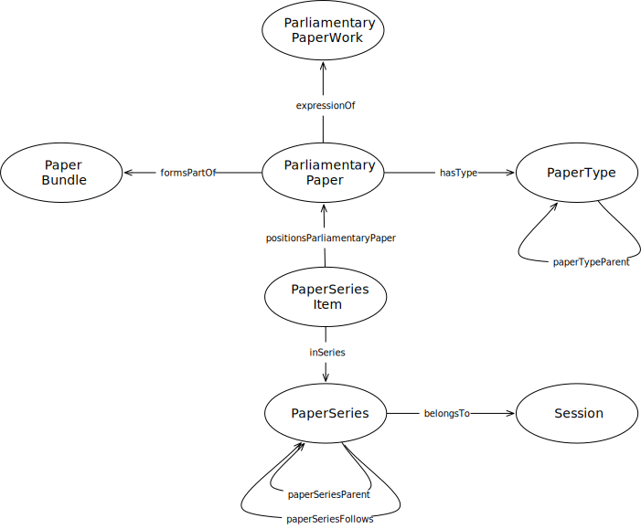

IRI: http://parliament.uk/ontologies/parliamentary-paper/PaperBundle
IRI: http://parliament.uk/ontologies/parliamentary-paper/PaperSeries
IRI: http://parliament.uk/ontologies/parliamentary-paper/PaperSeriesItem
IRI: http://parliament.uk/ontologies/parliamentary-paper/PaperType
IRI: http://parliament.uk/ontologies/parliamentary-paper/ParliamentaryPaper
IRI: http://parliament.uk/ontologies/parliamentary-paper/ParliamentaryPaperWork
IRI: http://parliament.uk/ontologies/parliamentary-paper/Session
IRI: http://parliament.uk/ontologies/parliamentary-paper/belongsTo
IRI: http://parliament.uk/ontologies/parliamentary-paper/expressionOf
IRI: http://parliament.uk/ontologies/parliamentary-paper/formsPartOf
IRI: http://parliament.uk/ontologies/parliamentary-paper/hasType
IRI: http://parliament.uk/ontologies/parliamentary-paper/inSeries
IRI: http://parliament.uk/ontologies/parliamentary-paper/paperSeriesFollows
IRI: http://parliament.uk/ontologies/parliamentary-paper/paperSeriesParent
IRI: http://parliament.uk/ontologies/parliamentary-paper/paperTypeParent
IRI: http://parliament.uk/ontologies/parliamentary-paper/positionsParliamentaryPaper
IRI: http://parliament.uk/ontologies/parliamentary-paper/confersPrivilege
IRI: http://parliament.uk/ontologies/parliamentary-paper/paperSeriesPrefix
This HTML document was obtained by processing the OWL ontology source code through LODE, Live OWL Documentation Environment, developed by Silvio Peroni.